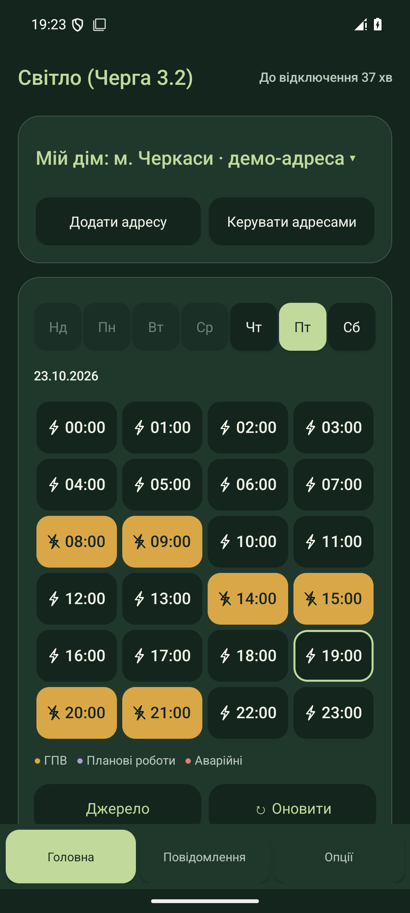

Світло 1.3.3
Знай, коли
буде світло.
Графік відключень, віджети й погода.
Для Христинівки та Черкащини.

Справжній інтерфейс · Демонстраційні дані
Графік відключень, віджети й погода.
Для Христинівки та Черкащини.
